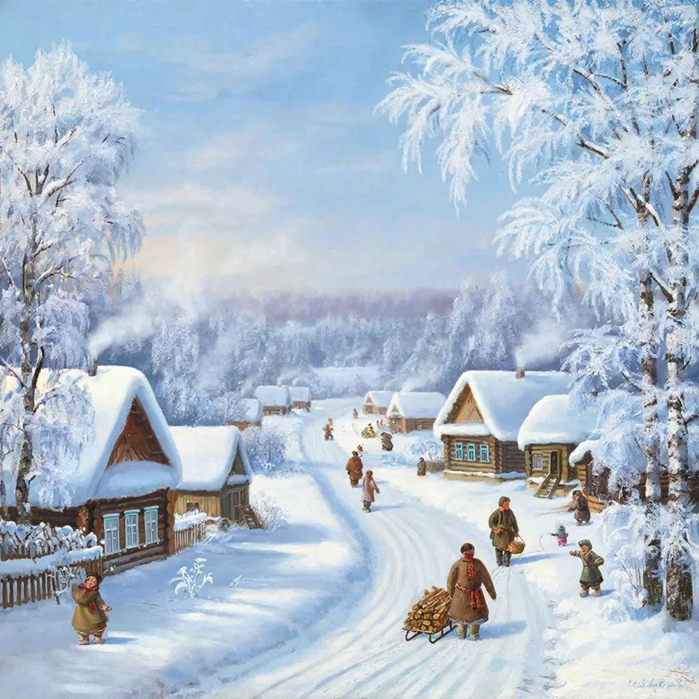

Русская зима — особое явление природы, которое завораживает своей красотой и очарованием. Она словно художник, рисует неповторимые пейзажи, окутывая всё вокруг белоснежным покрывалом. Давайте вместе погрузимся в атмосферу зимнего волшебства нашей родины.
Зима в России — это не просто сезон, это целая философия. Каждый регион встречает её по-своему: от суровых морозов Сибири до мягкого снежного покрова Центральной полосы. Но объединяет их одно — ощущение праздника, спокойствия и домашнего тепла.
Представьте себе тихий вечер, когда крупные хлопья снега медленно опускаются на землю, создавая иллюзию замедленного кино. Это именно тот момент, когда хочется остановиться и насладиться каждым мгновением. Природа будто шепчет: "Расслабься, полюбуйся..."
Один из символов русской зимы — крепкий мороз. Его прикосновения ощущаются сразу же, едва выйдя на улицу. Щёки розовеют, дыхание превращается в облачка пара, а воздух становится таким свежим, что кажется, будто пьёшь ароматный чай с мятой.
Что может быть уютнее зимних вечеров дома? Запах свежей выпечки, горячая чашечка чая, вязаные носки и плед — вот рецепт настоящего счастья. А если добавить сюда добрые фильмы, семейные посиделки и тёплые разговоры, то получится идеальный зимний отдых.
Зимой особенно приятно смотреть старые советские фильмы, такие как "Иван Васильевич меняет профессию" или "Ирония судьбы или с лёгким паром". Они создают особую атмосферу, погружают в воспоминания детства и дарят чувство сопричастности чему-то большему.
Но русская зима — это не только домашний уют. Её любят и ценят любители активного отдыха. Катание на лыжах, коньках, санях — все эти занятия становятся традиционными и любимыми среди россиян.
Катание на лыжах — отличный способ провести время на свежем воздухе. Здесь каждый найдёт занятие по душе: от неспешных прогулок по лесным тропинкам до скоростных спусков на специализированных трассах.
Кто из нас не помнит радостные визги детей, катающихся с горок на санках? Этот вид развлечения доступен каждому и дарит массу положительных эмоций независимо от возраста.
Зима — идеальное время для кулинарных экспериментов. Горячие блюда, согревающие напитки и сладости помогают пережить холодные дни и делают жизнь ярче.
Русский чай с травами, лимоном или вареньем — незаменимый спутник долгими вечерами. Он успокаивает душу, восстанавливает силы и создаёт настроение для душевных бесед.
Домашняя выпечка — гордость каждой хозяйки. Русские пироги с разнообразными начинками давно стали частью культуры. Их готовят на праздники, угощают гостей и наслаждаются сами.
Такова наша русская зима — удивительная, красивая, наполненная смыслом и радостью. Пусть она подарит вам незабываемые впечатления и станет источником вдохновения на долгие годы вперёд!
На главную.